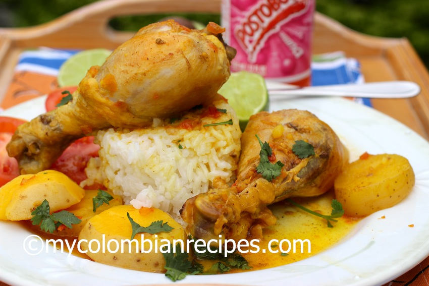

Este plato mezcla la gastronomía indígena y europea, pero al igual que el sancocho y prácticamente cada receta tiene sus variaciones según quién lo prepare. En Antioquia el sudado suele ser de pollo, res o cerdo y se acompaña de papa y yuca, a veces zanahoria y hasta plátano maduro; se cocina en poca agua para que no quede una sopa o caldo sino una especie de salsa y se sirve acompañado de arroz, guiso de tomate y cebolla, aguacate y ensalada. En otras zonas del país el sudado se prepara con pescado, albóndigas o conejo.
